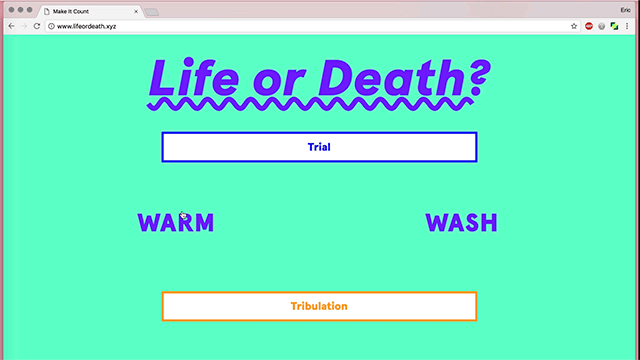
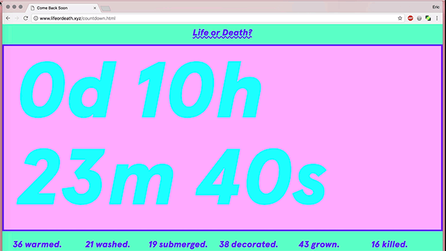
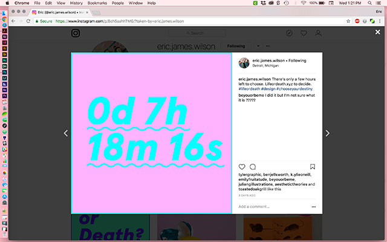
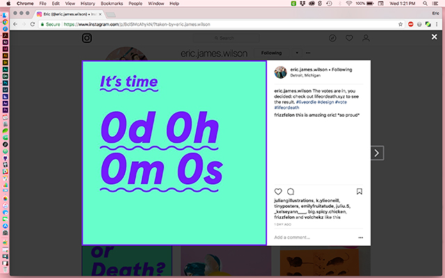

Life or Death?


During presidential elections, we all hope that by casting our votes, we're helping to put the best people with the best intentions in charge of key decision-making processes. Most often, this is not the case. With Life or Death? we created a short-term campaign without context. We sent out campaign blasts on Instagram and Facebook, which led users to a series of choices they could make.
We built a system to tally the votes and display a live-updating results page without knowing what the end of the campaign would be. Using ideas of relational design we developed a system that is determined by the input of each participant, rather than in spite of them. Every entry counts, no matter if the voter understands the context or not, they are all creators. They are all responsible for life or for
death.
Using Google's Firebase program integrated with custom JavaScript, we were able to build the live tracking system and variations in daily color countdowns. Through studio video, we captured the decision points of the polling results based on our pre-planning of the results tree.
Keeping the voters in the dark and interested proved to be difficult, however, the promise at the end and the mystery ensured that the final outcome of the project was well worth keeping voters in the dark until the end.



